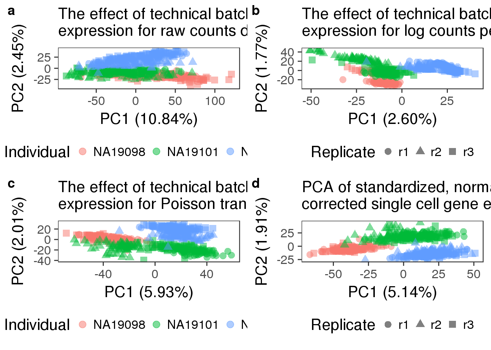

Last updated: 2017-02-15
Code version: 7b71f1a
library("ggplot2")
library("cowplot")
theme_set(theme_bw(base_size = 16))
theme_update(panel.grid.minor.x = element_blank(),
panel.grid.minor.y = element_blank(),
panel.grid.major.x = element_blank(),
panel.grid.major.y = element_blank(),
legend.key = element_blank(),
plot.title = element_text(size = rel(1)))
source("../../singleCellSeq/analysis/functions.R")This file performs principal component analysis (PCA) and displays the resultd from each stage of our data transformation (normalization) pipeline. Furthermore, it quantifies and tests the PCA results using pca-utils. The methodology described in Worley et al., 2013. Briefly, the differences between samples are calculated using the squared Mahalanobis distance. The distances are then scales so that the hypothesis test that the samples from two groups come from seperate distributionss can be computed with an F-test.
Input filtered annotation.
anno_filter<- read.table("../data/annotation-filter.txt", header=TRUE, stringsAsFactors = FALSE)
head(anno_filter) individual replicate well batch sample_id
1 NA19098 r1 A01 NA19098.r1 NA19098.r1.A01
2 NA19098 r1 A02 NA19098.r1 NA19098.r1.A02
3 NA19098 r1 A04 NA19098.r1 NA19098.r1.A04
4 NA19098 r1 A05 NA19098.r1 NA19098.r1.A05
5 NA19098 r1 A06 NA19098.r1 NA19098.r1.A06
6 NA19098 r1 A07 NA19098.r1 NA19098.r1.A07Input filtered molecule counts.
molecules_filter <- read.table("../data/molecules-filter.txt", header = TRUE, stringsAsFactors = FALSE)
stopifnot(ncol(molecules_filter) == nrow(anno_filter),
colnames(molecules_filter) == anno_filter$sample_id)Input standardized molecule counts (CPM).
#from stabdarize_CPM.Rmd
molecules_cpm <- read.table("../data/molecules-cpm.txt", header = TRUE,
stringsAsFactors = FALSE)
stopifnot(ncol(molecules_cpm) == nrow(anno_filter),
colnames(molecules_cpm) == anno_filter$sample_id)Input Poisson GLM transfomred molecule counts per million,
#from technical_noise_control.Rmd
molecules_cpm_trans <- read.table("../data/molecules-cpm-trans.txt", header = TRUE,
stringsAsFactors = FALSE)
stopifnot(ncol(molecules_cpm_trans) == nrow(anno_filter),
colnames(molecules_cpm_trans) == anno_filter$sample_id)Input final batch-corrected molecule counts per million.
#from mixed_effect_batch_correction.Rmd
molecules_final <- read.table("../data/molecules-final.txt", header = TRUE,
stringsAsFactors = FALSE)
stopifnot(ncol(molecules_final) == nrow(anno_filter),
colnames(molecules_final) == anno_filter$sample_id)pca_molecules_filter <- run_pca(molecules_filter)
pca_molecules_filter_title <- "The effect of technical batch on single cell gene expression for raw counts data"
pca_molecules_filter_plot <- plot_pca(pca_molecules_filter$PCs,
explained = pca_molecules_filter$explained,
metadata = anno_filter, color = "individual",
shape = "replicate", alpha = 0.5, size = 3) +
# labs(title = "The effect of technical batch \n on single cell gene expression data \n when raw counts are used")
labs(title = paste(strwrap(pca_molecules_filter_title, width = 50), collapse = "\n"))#create data frame with PCA output
pca_molecules_filter_out <- data.frame(Obs.id = 1:nrow(anno_filter),
Obs.batch = anno_filter$batch,
pca_molecules_filter$PCs[, 1:2])
write.table(pca_molecules_filter_out,
file = "../data/pca-molecules-filter.txt",
quote = FALSE, sep = "\t", row.names = FALSE)#pca-distances -i ../data/pca-molecules-filter.txt
#pca-dendrogram -i ../data/pca-molecules-filter.txtpca_molecules_cpm <- run_pca(molecules_cpm)
pca_molecules_cpm_title <- "The effect of technical batch on single cell gene expression for log counts per million data"
pca_molecules_cpm_plot <- plot_pca(pca_molecules_cpm$PCs,
explained = pca_molecules_cpm$explained,
metadata = anno_filter, color = "individual",
shape = "replicate", alpha = 0.5, size = 3) +
labs(title = paste(strwrap(pca_molecules_cpm_title, width = 50), collapse = "\n"))
# labs(title = "The effect of technical batch \n on single cell gene expression data \n when log transformed counts per million data are used")pca_molecules_cpm_out <- data.frame(Obs.id = 1:nrow(anno_filter),
Obs.batch = anno_filter$batch,
pca_molecules_cpm$PCs[, 1:2])
write.table(pca_molecules_cpm_out,
file = "../data/pca-molecules-cpm.txt",
quote = FALSE, sep = "\t", row.names = FALSE)#pca-distances -i ../data/pca-molecules-cpm.txt
#pca-dendrogram -i ../data/pca-molecules-cpm.txt pca_molecules_cpm_trans <- run_pca(molecules_cpm_trans)
pca_molecules_cpm_trans_title <- "The effect of technical batch on single cell gene expression for Poisson transformed data"
pca_molecules_cpm_trans_plot <- plot_pca(pca_molecules_cpm_trans$PCs,
explained = pca_molecules_cpm_trans$explained,
metadata = anno_filter, color = "individual",
shape = "replicate", alpha = 0.5, size = 3) +
labs(title = paste(strwrap(pca_molecules_cpm_trans_title, width = 50), collapse = "\n"))
# labs(title = "The effect of technical batch \n on single cell gene expression data \n when Poisson transformed data are used")pca_molecules_cpm_trans_out <- data.frame(Obs.id = 1:nrow(anno_filter),
Obs.batch = anno_filter$batch,
pca_molecules_cpm_trans$PCs[, 1:2])
write.table(pca_molecules_cpm_trans_out,
file = "../data/pca-molecules-cpm-trans.txt",
quote = FALSE, sep = "\t", row.names = FALSE)#pca-distances -i ../data/pca-molecules-cpm-trans.txt
#pca-dendrogram -i ../data/pca-molecules-cpm-trans.txtpca_final <- run_pca(molecules_final)
pca_final_title <- "PCA of standardized, normalized, and batch corrected single cell gene expression data"
pca_final_plot <- plot_pca(pca_final$PCs, explained = pca_final$explained,
metadata = anno_filter, color = "individual",
shape = "replicate", alpha = 0.5, size = 3) +
labs(title = paste(strwrap(pca_final_title, width = 50), collapse = "\n"))
# labs(title = "PCA of standardized, \n normalized, and batch corrected \n single cell gene expression data")pca_final_out <- data.frame(Obs.id = 1:nrow(anno_filter),
Obs.batch = anno_filter$batch,
pca_final$PCs[, 1:2])
write.table(pca_final_out,
file = "../data/pca-final.txt",
quote = FALSE, sep = "\t", row.names = FALSE)#pca-distances -i ../data/pca-final.txt
#pca-dendrogram -i ../data/pca-final.txtFigure 4 in paper
plot_final <- plot_grid(
pca_molecules_filter_plot +
scale_color_discrete(name = "Individual") +
guides(shape = FALSE) + theme(legend.position = "bottom"),
pca_molecules_cpm_plot +
scale_shape(name = "Replicate") +
guides(color = FALSE) + theme(legend.position = "bottom"),
pca_molecules_cpm_trans_plot +
scale_color_discrete(name = "Individual") +
guides(shape = FALSE) + theme(legend.position = "bottom"),
pca_final_plot +
scale_shape(name = "Replicate") +
guides(color = FALSE) + theme(legend.position = "bottom"),
labels = letters[1:4])
plot_final
Skip writting this figure as a tiff file
sessionInfo()R version 3.3.2 (2016-10-31)
Platform: x86_64-redhat-linux-gnu (64-bit)
Running under: Scientific Linux 7.2 (Nitrogen)
locale:
[1] LC_CTYPE=en_US.UTF-8 LC_NUMERIC=C
[3] LC_TIME=en_US.UTF-8 LC_COLLATE=en_US.UTF-8
[5] LC_MONETARY=en_US.UTF-8 LC_MESSAGES=en_US.UTF-8
[7] LC_PAPER=en_US.UTF-8 LC_NAME=C
[9] LC_ADDRESS=C LC_TELEPHONE=C
[11] LC_MEASUREMENT=en_US.UTF-8 LC_IDENTIFICATION=C
attached base packages:
[1] parallel grid stats graphics grDevices utils datasets
[8] methods base
other attached packages:
[1] Humanzee_0.1.0 devtools_1.12.0 doMC_1.3.4
[4] iterators_1.0.8 foreach_1.4.3 scales_0.4.1
[7] VennDiagram_1.6.17 futile.logger_1.4.3 testit_0.6
[10] data.table_1.10.0 biomaRt_2.30.0 tidyr_0.6.1
[13] gridExtra_2.2.1 lme4_1.1-12 Matrix_1.2-7.1
[16] edgeR_3.16.5 limma_3.30.9 cowplot_0.7.0
[19] ggplot2_2.2.1 dplyr_0.5.0 workflowr_0.3.0
[22] rmarkdown_1.3
loaded via a namespace (and not attached):
[1] Rcpp_0.12.9 locfit_1.5-9.1 lattice_0.20-34
[4] assertthat_0.1 rprojroot_1.2 digest_0.6.12
[7] R6_2.2.0 plyr_1.8.4 futile.options_1.0.0
[10] backports_1.0.5 stats4_3.3.2 RSQLite_1.1-2
[13] evaluate_0.10 httr_1.2.1 lazyeval_0.2.0
[16] curl_2.3 minqa_1.2.4 rstudioapi_0.6
[19] nloptr_1.0.4 S4Vectors_0.12.1 labeling_0.3
[22] splines_3.3.2 statmod_1.4.27 stringr_1.1.0
[25] RCurl_1.95-4.8 munsell_0.4.3 compiler_3.3.2
[28] BiocGenerics_0.20.0 htmltools_0.3.5 tibble_1.2
[31] IRanges_2.8.1 codetools_0.2-15 XML_3.98-1.5
[34] withr_1.0.2 MASS_7.3-45 bitops_1.0-6
[37] nlme_3.1-128 gtable_0.2.0 DBI_0.5-1
[40] git2r_0.18.0 magrittr_1.5 stringi_1.1.2
[43] lambda.r_1.1.9 tools_3.3.2 Biobase_2.34.0
[46] yaml_2.1.14 AnnotationDbi_1.36.1 colorspace_1.3-2
[49] memoise_1.0.0 knitr_1.15.1 This site was created with R Markdown